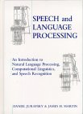

This course attempts to be a comprehensive overview of the field. The course work will require written assignments, programming and a final project. Assignments will provide exposure to commonly used NLP datasets.
Announcements |
- Important Dates:
- Wed, Sep 3rd: First day of class
- Fri, Nov 28th: Last day of class
- Wed, Oct 15-17: Midterm Week, Review and Examination
- Tue, Dec 9: Final Project Presentations 10am to 2:20pm at WMC 3510
- Grading for the course:
- Assignments (20%),
- Midterm (20%),
- Final Project (40%),
- Class Presentation (20%).
- Guidelines for Class Presentation:
- 20 mins, no more than 10 slides
- One presentation is required
- Contents to be determined based on your interest and after
discussion with me
- Location of data files and software packages:
- Data files are stored in
/cs/825/data - Software can be found in various sub-directories of
/cs/825/software - Sep 13, 2003: added Tutorial on Collections and References in Perl in the Syllabus and Readings section.
- Sep 15, 2003: added Brief Introduction to Issues in Multiple Sequence Alignment to the Syllabus and Readings section.
- Sep 25, 2003: fixed off by one error in the HMM spreadsheet. Use the updated file, also linked below.
- Nov 18, 2003: fixed typos in reading for Document Classification.
- Nov 18, 2003: new date and location for final presentation.
Assignments |
- Homework #0. Distributed on Sep 3. Do not hand in.
- File location:
/cs/825/dataNote: also available from/cs/fac1/anoop/data/cmpt825
- Files:
hw0.txt, wc.pl
- Homework #1. Distributed on Sep 5. Due in class on Sep 12.
- File location
/cs/825/data. File:hw1.txt - Homework #2. Distributed on Sep 12. Due in class on Sep 19.
- Files are in
/cs/825/data/recap - Homework #3. Distributed on Sep 19. Due in class on Sep 26.
- Files for this homework are in
/cs/825/data - File:
viterbi.xls - Homework #4. Distributed on Sep 26. Due in class on Oct 3.
- Files for this homework are in
/cs/825/data/postags - Guide to the part of speech tags is provided in
/cs/825/data/postags/tagguide.pdf - Homework #5. Distributed on Oct 3. Due in class on Oct 10.
- Files for this homework are in
/cs/825/data/translit
- Homework #6. Distributed on Oct 10. Due in class on Oct 17.
- Homework #7. Distributed on Oct 31. Due in class on Nov 7.
- Homework #8. Distributed on Nov 14. Due in class on Nov 28.
- For more details on Earley parsing, see:
An efficient context-free parsing algorithm. Jay Earley. Communications of the ACM 26(1). 1983.
Syllabus and Readings
|
| Dates | Topics and Lecture Notes |
Readings |
| Sep 3-5 |
Additional Reading: Brief Introduction to Issues in Multiple Sequence Alignment Perl tutorials online: the Picking Up Perl tutorial, PerlIntro, Diana Inkpen's tutorial, more tutorials on perl.com. Demos: Festival, Natural Voices, Newsblaster, CMU Communicator, MIT Jupiter |
MS: Chp 1,3 |
| Sep 10-12 |
Software: SRI Language Modelling toolkit |
MS:
Chp 2,6 Chen and Goodman 1998 |
| Sep 17-19 |
Additional Reading: P. Felzenszwalb, D. Huttenlocher, J. Kleinberg. Fast Algorithms for Large-State-Space HMMs with Applications to Web Usage Analysis. Advances in Neural Information Processing Systems (NIPS) 16, 2003. |
MS: Chp 9 |
| Sep 24-26 |
Link: Part of Speech Tagging Guidelines for the Penn Treebank Link: CoNLL shared task on NER, 2003, 2002 Link: CoNLL shared task on Chunking, 2000 Link: Chinese Word Segmentation Bakeoff 2003 |
MS: Chp 10 |
| Oct 1-3 |
Student Presentation: Yudong Liu
(ppt slides) Additional slides: Tutorial on the fsm toolkit by Mehryar Mohri Additional reading: Simpler and More General Minimization for Weighted Finite-State Automata. Jason Eisner. In Proc. of HLT-NAACL 2003. (slides) Software: AT&T fsm toolkit Link: FSTs at Xerox Link: FSTs at ISI |
Mohri
1996 Mohri 1997 |
| Oct 8-10 |
Link: Wordnet |
MS: Chp 7 |
| Oct 15-17 |
|
|
| Oct 22-24 |
|
MS: Chp 13 K. Knight MT Tutorial |
| Oct 29-31 |
Additional Slides: Slides on the Bleu metric by Kishore Papineni (read pages 57-75) Additional Reading: BLEU: A Method for Automatic Evaluation of Machine Translation. Kishore Papineni, Salim Roukos, Todd Ward and Wi-Jing Zhu. Proceedings of the 40th Annual Meeting of the Association for Computational Linguistics. 2002 Additional Reading: Word Reordering and a Dynamic Programming Beam Search Algorithm for Statistical Machine Translation. Christoph Tillmann and Hermann Ney. Computational Linguistics. Vol. 29, Issue 1 - March 2003, pp. 97 - 133 |
Brown et. al. |
| Nov 5-7 |
Additional Reading: Corpus Based PP Attachment Ambiguity Resolution with a Semantic Dictionary. Jiri Stetina and Makoto Nagao. Fifth Workshop on Very Large Corpora. |
MS: Chp 8,11 Church and Patil |
| Nov 12-14 |
Additional Reading: Head-Driven Statistical Models for Natural Language Parsing. Michael Collins. 2003. To appear in Computational Linguistics. Additional Reading: Statistical Parsing with a Context-Free Grammar and Word Statistics. Eugene Charniak. Proceedings of the Fourteenth National Conference on Artificial Intelligence AAAI Press/MIT Press, Menlo Park (1997). pdf version. |
MS: Chp 12 Collins |
| Nov 19-21 |
Additional Reading: A short introduction to boosting . Y. Freund and R. Schapire. Journal of the Japanese Society for Artificial Intelligence. 14(5), pages 771-780, 1999. Additional Reading: Discriminative Reranking for Natural Language Parsing. Michael Collins. In Proc. 17th International Conf. on Machine Learning, pages 175-182, 2000. Additional Reading: Boosting Applied to Tagging and PP Attachment . Steven Abney, Robert E. Schapire, and Yoram Singer. Proceedings of the 1999 Joint SIGDAT Conference on Empirical Methods in Natural Language Processing and Very Large Corpora, pp. 38-45. 1999. |
MS: Chp 16 |
| Nov 26-28 |
Additional Reading: A Two-Round Variant of EM for Gaussian Mixtures. Sanjoy Dasgupta and Leonard Schulman. Uncertainty in AI, 2000. Additional Reading: The EM Algorithm. manuscript by Michael Collins. Review of three famous papers about the EM algorithm: (Dempster, Laird and Rubin 1977), (Wu 1983), and (Jamshidian and Jennrich 1993). |
MS: Chp 14 |
Textbook |
 |
Course
Textbook Foundations of Statistical Natural Language Processing by Christopher D. Manning, Hinrich Schutze. 680 pages 1 edition (1999), M.I.T. Press/Triliteral, ISBN: 0262133601 This book has a webpage. This book is referred to as MS: on this web page. |
|  |
For
Reference Only Speech and Language Processing: An Introduction to Natural Language Processing, Computational Linguistics, and Speech Recognition by Daniel Jurafsky, James H. Martin. 934 pages 1 edition (January 26, 2000), Prentice Hall, ISBN: 0130950696 The book also has a webpage. In particular visit it for the Errata and the online Resources sections. |